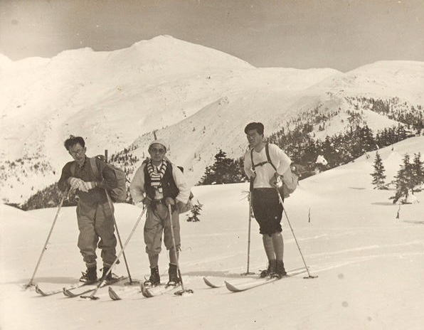
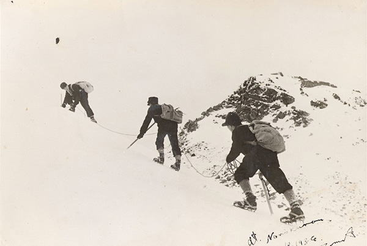
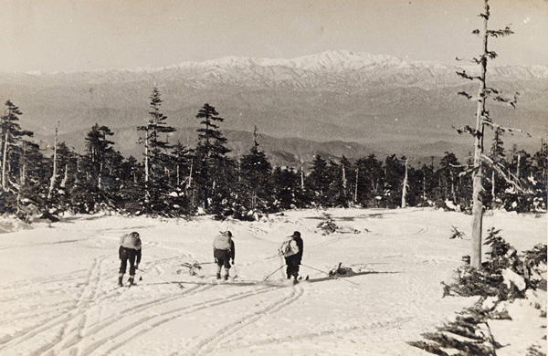
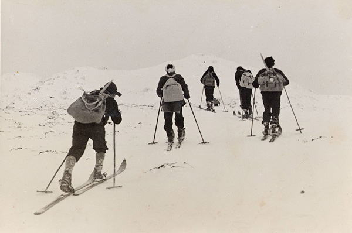

|
|||||||||||||||||||||||||||
|
|||||||||||||||||||||||||||
|
昭和初期・乗鞍岳での山スキー |
| 実 施 日 | 昭和９年３月撮影 | |||
| 報 告 者 | 木下喜代男 | |||
| HP制作者 | 高井（紀） | |||
| 最近飛騨高山の旧家から出てきた古い山スキーの写真をお目にかけます。 |
| 明治期に近代登山が導入されたものの、しばらくは無雪期のしかも夏季の登山に限られていました。 積雪期の登山が発展するきっかけとなったのは、明治44年（1911年）1月、オーストリアの陸軍武官テオドール・エドレフ・レルヒ少佐が高田の第13師団に紹介したスキー術であることはご存知のとおりです。 |
| アルピニズムを実践するための補助技術と言える山岳スキー術は、その後すぐ北海道に伝わり、札幌農学校（後の北大）にスキー部が創設されました。 |
| この時期農学校に在学していた高山の造り酒屋の二木長右衛門（のちに飛騨山岳会長）が大正2年（1913年）に飛騨にスキーを伝えました。これは全国的に見てかなり早い時期だと思います。 |
| 大正8年（1919年）には地元斐太中学にスキー部が設立され、裏山で一本杖のスキー練習が行われています。 |
| 大正12年の春には、慶大の大島亮吉らが飛騨側から槍ヶ岳のスキー初登頂を行いましたが、この頃から飛騨の岳人たちは乗鞍岳の西面に入り、スキーを楽しむようになったようです。乗鞍岳の西面には途中山小屋が4軒もでき、全国からの山スキーヤーで賑わいました。 |
| これらの写真は飛騨山岳会員のＩさんが、大正末から昭和初期にかけてパーレットやコリブリなどのカメラで登山の様子を記録したものの一部で、昭和9年3月乗鞍岳で撮影されたものです。 |
|  |
|  |
|  |
|  |